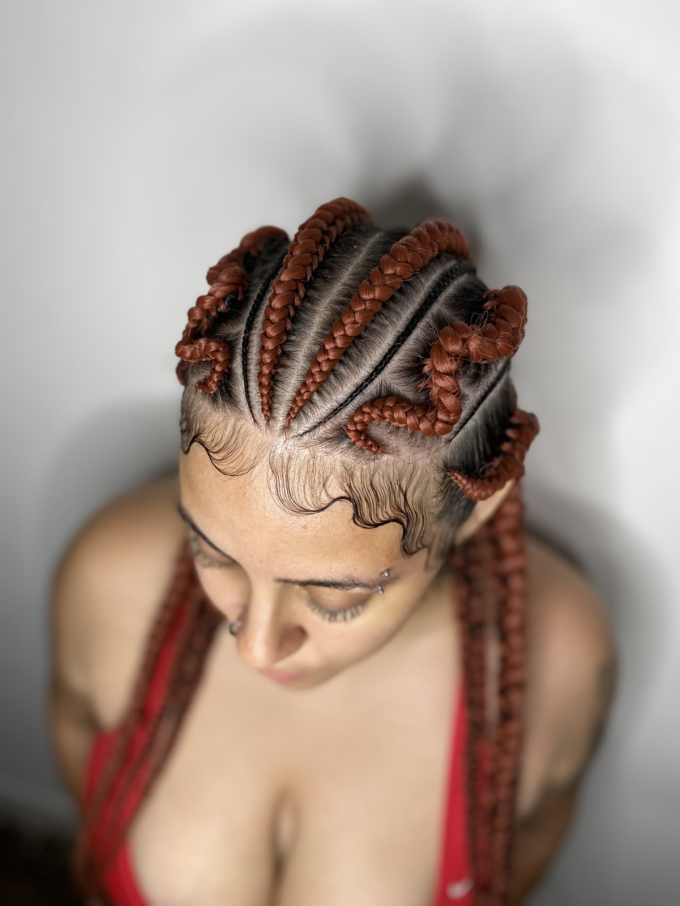
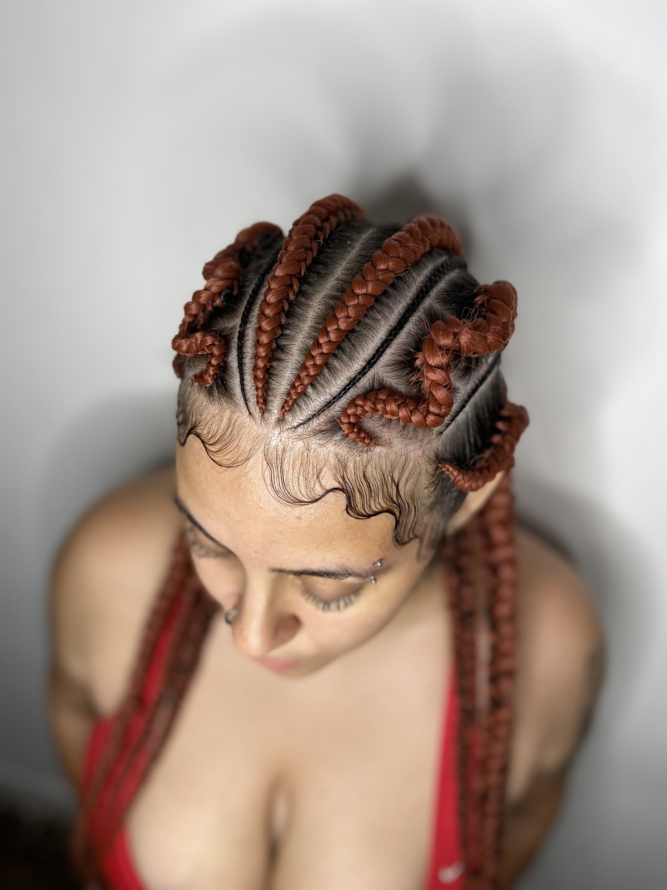

ENTRELACE E CROCHET BRAIDS
O que é?
Ambas são técnicas de alongamentos feitos com cabelos orgânicos ou bio orgânicos, materiais que se assemelham ao cabelo humano. O procedimento traz muita versatilidade pelos seus diversos tipos de cores e curvaturas de cachos e volume, trazendo uma experiência única para quem usa, pois se adequa sempre ao estilo que você deseja. Além disso, essas técnicas de alongamentos são ótimas opções para fazer na transição capilar, pois preserva a estrutura do cabelo natural.
Qual é a técnica usada?
A primeira parte do procedimento consiste em fazer uma trança raiz como base para a aplicação do cabelo. Caso seja o entrelace, a segunda parte é costurar a tela de cabelo na base feita de tranças. Se for o crochet braids, a aplicação será feita mecha a mecha na base feita de tranças.
Quanto tempo em média leva a aplicação?
De 4 a 5 horas de aplicação.
Qual a durabilidade do penteado?
Pode levar de 2 a 3 meses para precisar de manutenção.
Quem pode colocar?
Qualquer pessoa que tenha no mínimo 6cm de comprimento do cabelo.
Como cuidar?
O cuidado é muito parecido com os cuidados feitos com o cabelo humano, com ressalva na hora de passar o xampu, sempre indicamos diluir o xampu em um recipiente com água antes de levar a cabeça para espalhar melhor na hora da lavagem na raiz.
Danifica o cabelo?
De jeito nenhum, principalmente com a técnica utilizada em nosso espaço. O procedimento além de proteger a estrutura natural do cabelo, utiliza dos benefícios das tranças raízes feito na base para prover nutrientes ao cabelo durante o período em que você estiver com o orgânico , o que vai fazer você dispensar hidratações enquanto estiver com o penteado, pois o próprio couro cabeludo com a ajuda da trança raiz já irá prover.


 
